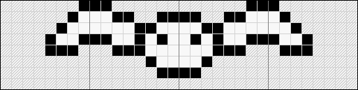
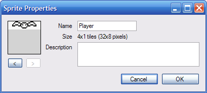
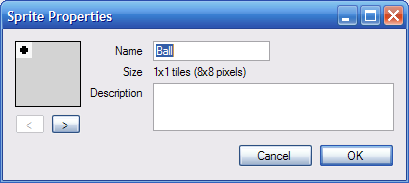
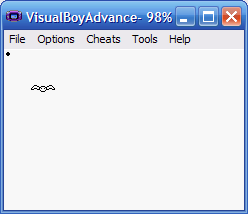
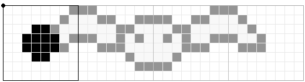
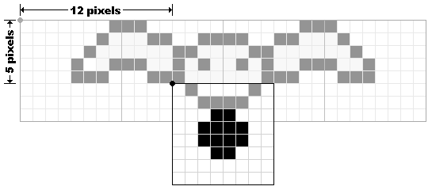
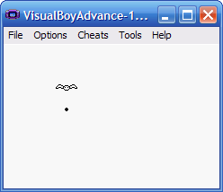

Adding a projectile
This tutorial will show you how to add a projectile that fires off when you press the "A" button.
This tutorial has been tested with devkitARM release 26 and Spritely version 0.19.20 beta and verified to work for both GBA and NDS projects.
Step 1 : Create player sprite
As always, we first need a sprite for the player. This is the object that will be throwing (or dropping) the projectile.
For this tutorial, we'll be using a simple bat player. After you finish adding projectiles, you can go to the Animating tutorial and make it more interesting. But for now, we'll stick with a simple un-animated player.

Name the player sprite "Player":

Step 2 : Create the projectile
Now we need to create the projectile that will be thrown by the player. Typically, projectiles are much smaller than the player so we will draw a small 1x1 ball.
Name the projectile sprite "Ball":

Step 3 : Export
Export your project and open your project file so that you can start editing the source code.
If you build/run now, you will see only one of your sprites on the screen - either the player or the ball (whichever one occurs first in the spritelist).
Step 4 : Define the projectile object
Everything that is displayed on the GBA/NDS screen needs to be defined as an object, so let's set up the projectile as an object. This process is exactly the same as what you did in the Adding a second object tutorial (except for the names of the objects).
Find the following code in game_state.h:
game_state.h — Lines 14 - 16:
// The objects in our game. // Only 128 objects (0-127) can be defined at any time. const int kObj_Player = 0;
...and add a definition for the projectile object.
game_state.h — Lines 14 - 17:
// The objects in our game. // Only 128 objects (0-127) can be defined at any time. const int kObj_Player = 0; const int kObj_Ball = 1;
So, now we have two objects defined: the player object kObj_Player and the projectile object kObj_Ball.
Step 5 : Initialize our objects
Now that we've defined our 2 objects, we need to initialize them so that they appear on the screen when/where we want them.
Open up game_state.cpp. Scroll down until you find the following lines:
game_state.cpp — Lines 48 - 54:
// Initialize the objects for the first level. InitObject(kObj_Player, 0); // Set the initial location of each object. _xPlayer = 0; _yPlayer = 0; MoveObjectTo(kObj_Player, _xPlayer, _yPlayer);This is the code that initializes the player object. It specifies which sprite to use for the object and where to place it on the screen. By default, it uses the first sprite (sprite #0) and places the sprite at (0,0) on the screen.
First, let's make it use the correct sprite for the player. Change the code to:
game_state.cpp — Lines 48 - 54:
// Initialize the objects for the first level. InitObject(kObj_Player, kSprites_Player); // Set the initial location of each object. _xPlayer = 0; _yPlayer = 0; MoveObjectTo(kObj_Player, _xPlayer, _yPlayer);
This tells the player object to use the player sprite.
To initialize the projectile, we need to add a call to InitObject and we need to move the projectile to a starting position:
game_state.cpp — Lines 48 - 58:
// Initialize the objects for the first level. InitObject(kObj_Player, kSprites_Player); InitObject(kObj_Ball, kSprites_Ball); // Set the initial location of each object. _xPlayer = 0; _yPlayer = 0; MoveObjectTo(kObj_Player, _xPlayer, _yPlayer); // Initialize the projectile. MoveObjectTo(kObj_Ball, 0, 0);
Step 6 : Build/Run
Compile and run your code and you should have a player that can move around and a projectile object stuck in the upper left corner of the screen.

Step 7 : Hide the projectile
This isn't quite what we want. We'd like the projectile to be hidden until we press the "A" button.
To do this, we'll add some code so that the projectile starts out hidden.
game_state.cpp — Lines 48 - 59:
// Initialize the objects for the first level. InitObject(kObj_Player, kSprites_Player); InitObject(kObj_Ball, kSprites_Ball); ShowObject(kObj_Ball, false); // Set the initial location of each object. _xPlayer = 0; _yPlayer = 0; MoveObjectTo(kObj_Player, _xPlayer, _yPlayer); // Initialize the projectile. MoveObjectTo(kObj_Ball, 0, 0);
To have the projectile appear when the "A" button is pressed, we need to make a change to the Update routine so that it shows the projectile object. Find the following code:
game_state.cpp — Lines 92 - 97:
// Handle the player pressing the 'A' button.
// We use CheckKeyPress() because we *don't* want the action to repeat
// unless the player presses the 'A' button multiple times.
if (CheckKeyPress(KEY_A)) {
// ToDo: Add code to respond to 'A' button press here.
}
... and add:
game_state.cpp — Lines 92 - 98:
// Handle the player pressing the 'A' button. // We use CheckKeyPress() because we *don't* want the action to repeat // unless the player presses the 'A' button multiple times. if (CheckKeyPress(KEY_A)) { // ToDo: Add code to respond to 'A' button press here. ShowObject(kObj_Ball, true); }
Step 8 : Build/Run
Build and run now and the projectile is hidden until you press the "A" button.
But it's still stuck in the upper left corner of the screen. Also, pressing "A" multiple times has no effect (once the projectile is shown, it stays there forever).
Step 9 : Set the projectile's initial location
When the player presses the "A" button, they expect the projectile to start from the current location of the player.
We can make this happen by setting the projectile location to be equal to the player's current location.
game_state.cpp — Lines 92 - 99:
// Handle the player pressing the 'A' button. // We use CheckKeyPress() because we *don't* want the action to repeat // unless the player presses the 'A' button multiple times. if (CheckKeyPress(KEY_A)) { // ToDo: Add code to respond to 'A' button press here. MoveObjectTo(kObj_Ball, _xPlayer, _yPlayer); ShowObject(kObj_Ball, true); }
Since we only set the projectile location when the "A" button is pressed, the projectile will stay in its new location even if the player moves away.
Step 10 : Build/Run
Build/run and now the projectile will jump to the player's current location whenever you press the "A" button.
Step 11 : Adjust the projectile's initial location
While the projectile moves to the player's position when we press the "A" button, it's not exactly in the right spot. When we copy the projectile's position from the player's position, they are drawn on the screen as follows:

Which, in this example, makes it look like the ball is coming out of the bat's right wing - not the effect we wanted.
What we really want is for the ball to appear centered under the player sprite:

To do that, we need to adjust the ball's starting position by 12 pixels in the x-direction (horizontally) and 5 pixels in the y-direction\ (vertically). If you created your own sprite or if you want the projectile to go a different direction (left, right or up), then you'll need to figure out the x- and y-offsets that look good for your sprites.
Once we've determined the correct x- and y-offsets, we can modify the code to include the offsets when we move the projectile to its starting position:
game_state.cpp — Lines 92 - 99:
// Handle the player pressing the 'A' button. // We use CheckKeyPress() because we *don't* want the action to repeat // unless the player presses the 'A' button multiple times. if (CheckKeyPress(KEY_A)) { // ToDo: Add code to respond to 'A' button press here. MoveObjectTo(kObj_Ball, _xPlayer + 12, _yPlayer + 5); ShowObject(kObj_Ball, true); }
Step 12 : Build/Run
Build/run and the ball appears centered under the bat.
If you created your own sprites, you may need to run your program a few times with different offsets to see which one works best.
Step 13 : Make the projectile move
Finally, we can start making the projectile move. There are two things that we need to keep track of:
- Do we currently have a projectile in motion?
- The current position of the projectile.
The first item is useful because we don't want to bother updating the projectile unless we actually have one moving around on the screen. The second item is needed to keep track of the projectile's current position.
To keep track of these things, we need to declare some variables in game_state.h:
game_state.h — Lines 40 - 48:
// The (x,y) location of the object representing the player. int _xPlayer, _yPlayer; // Do we have a projectile in motion? bool _has_projectile; // The (x,y) location of the projectile. int _xBall, _yBall; };
And initialize them in game_state.cpp by changing:
game_state.cpp — Lines 58 - 59:
// Initialize the projectile. MoveObjectTo(kObj_Ball, 0, 0);
to:
game_state.cpp — Lines 58 - 62:
// Initialize the projectile. _xBall = 0; _yBall = 0; MoveObjectTo(kObj_Ball, _xBall, _yBall); _has_projectile = false;
Step 14 : Build
Build to make sure you don't have any syntax errors.
If you run the program now, it should behave exactly the same as the last time. But now we have the variables in place to make the projectile move.
Step 15 : Really make the projectile move
OK. Now we're really going to make the projectile move.
First, find the code that handles the "A" button press:
game_state.cpp — Lines 95 - 102:
// Handle the player pressing the 'A' button.
// We use CheckKeyPress() because we *don't* want the action to repeat
// unless the player presses the 'A' button multiple times.
if (CheckKeyPress(KEY_A)) {
// ToDo: Add code to respond to 'A' button press here.
MoveObjectTo(kObj_Ball, _xPlayer + 12, _yPlayer + 5);
ShowObject(kObj_Ball, true);
}
And change it to use the new variables that you just created:
game_state.cpp — Lines 95 - 106:
// Handle the player pressing the 'A' button. // We use CheckKeyPress() because we *don't* want the action to repeat // unless the player presses the 'A' button multiple times. if (CheckKeyPress(KEY_A)) { // ToDo: Add code to respond to 'A' button press here. _xBall = _xPlayer + 12; _yBall = _yPlayer + 5; MoveObjectTo(kObj_Ball, _xBall, _yBall); _has_projectile = true; ShowObject(kObj_Ball, true); }
Now, just after this code, we can add some code to update the projectile's position:
game_state.cpp — Lines 95 - 112:
// Handle the player pressing the 'A' button. // We use CheckKeyPress() because we *don't* want the action to repeat // unless the player presses the 'A' button multiple times. if (CheckKeyPress(KEY_A)) { // ToDo: Add code to respond to 'A' button press here. _xBall = _xPlayer + 12; _yBall = _yPlayer + 5; MoveObjectTo(kObj_Ball, _xBall, _yBall); _has_projectile = true; ShowObject(kObj_Ball, true); } if (_has_projectile) { _xBall += 0; _yBall += 1; MoveObjectTo(kObj_Ball, _xBall, _yBall); }
Here we're adding 1 to the ball's y-coordinate (_yBall) to make the ball move down. If you want your projectile to move up, you need to subtract 1 instead:
_xBall += 0; _yBall -= 1;
To move your projectile right or left, you need to (respectively) add or subtract 1 from the x-coordinate. To move right use:
_xBall += 1; _yBall += 0;
and to move left, use:
_xBall -= 1; _yBall += 0;
Step 16 : Build/Run
Build/run and you now have a working projectile

Hmmm... There are 2 problems with our current projectiles:
- If you press "A" multiple times, the projectile resets back to the player's location.
- If you wait after pressing "A" (and don't press "A" again), the projectile will go off the screen and eventually return from the opposite side! If our bat example, the ball goes off the bottom of the screen and comes back at the top.
To fix this, we need to:
- Use _has_projectile to ensure that we don't launch a new projectile if we alreay have one in-flight.
- Add a check to turn off the projectile once it goes outside the screen bounds.
Step 17 : Only allow one projectile
To address the first problem, we need to use the _has_projectile variable and ignore the "A" button if there is already a projectile on the screen.
Find:
game_state.cpp — Lines 95 - 106:
// Handle the player pressing the 'A' button.
// We use CheckKeyPress() because we *don't* want the action to repeat
// unless the player presses the 'A' button multiple times.
if (CheckKeyPress(KEY_A)) {
// ToDo: Add code to respond to 'A' button press here.
_xBall = _xPlayer + 12;
_yBall = _yPlayer + 5;
MoveObjectTo(kObj_Ball, _xBall, _yBall);
_has_projectile = true;
ShowObject(kObj_Ball, true);
}
and modify the if condition from:
If the player presses the "A" button
to:
If the player presses the "A" button AND we don't already have a projectile
The code to do this is as follows:
game_state.cpp — Lines 95 - 106:
// Handle the player pressing the 'A' button. // We use CheckKeyPress() because we *don't* want the action to repeat // unless the player presses the 'A' button multiple times. if (CheckKeyPress(KEY_A) && !_has_projectile) { // ToDo: Add code to respond to 'A' button press here. _xBall = _xPlayer + 12; _yBall = _yPlayer + 5; MoveObjectTo(kObj_Ball, _xBall, _yBall); _has_projectile = true; ShowObject(kObj_Ball, true); }
Step 18 : Build/Run
Build/run and you can now fire off only 1 projectile which will then wrap around the screen and come out the other side.
Once you fire off your first projectile, you cannot launch another one. We'll fix that in the next (the final!) step.
Step 19 : Turn off projectile when it exits screen
The last thing we need to do is to turn off the projectile when it exits the screen. This is similar to the Screen bounds tutorial except that we're detecting objects leaving the screen instead of constraining them within the screen.
To do this, we modify the code that moves the projectile:
game_state.cpp — Lines 108 - 112:
if (_has_projectile) {
_xBall += 0;
_yBall += 1;
MoveObjectTo(kObj_Ball, _xBall, _yBall);
}
...and add code to check if the projectile has left the screen:
game_state.cpp — Lines 108 - 125:
if (_has_projectile) { _xBall += 0; _yBall += 1; MoveObjectTo(kObj_Ball, _xBall, _yBall); // Get the width/height of the projectile. int width, height; GetObjectSize(kObj_Ball, &width, &height); // Turn off the projectile when it leaves the screen. if (_xBall < -width || _xBall > SCREEN_WIDTH || _yBall < -height || _yBall > SCREEN_HEIGHT) { ShowObject(kObj_Ball, false); _has_projectile = false; } }
As with the Screen bounds tutorial, we need to take the width and height of the projectile into account so that we remove the projectile only when it has completely left the screen.
Step 20 : Build/Run
Build/run and now your projectile (finally) works as intended.
Finished!
You're done.
What about multiple projectiles at the same time? We'll get to that in a later tutorial - we need to introduce some more programming concepts before we can do that.
Links to completed project
GBA:
NDS: